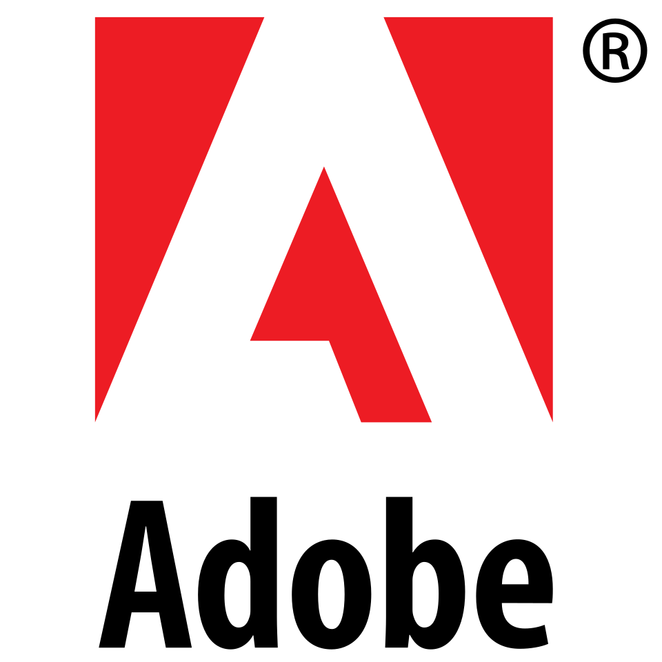

Schoolprojecten
Voor webontwikkeling werk ik met HTML, CSS en een beetje JavaScript. Deze portfolio is een project waarin ik structuur, layout, responsive design en navigatie combineer.
Mijn traject
Ik bouw mijn ervaring vooral op door dingen zelf uit te proberen: nieuwe software openen, tutorials volgen, kleine projecten maken en achteraf verbeteren wat nog niet goed werkt.

Voor webontwikkeling werk ik met HTML, CSS en een beetje JavaScript. Deze portfolio is een project waarin ik structuur, layout, responsive design en navigatie combineer.
Ik leer graag door zelf te testen. Als ik een nieuw programma open, probeer ik functies uit tot ik begrijp hoe het werkt en waarvoor ik het kan gebruiken.
Video editing helpt mij om creatiever te denken. Timing, beeldkeuze en montage zijn onderdelen waar ik beter in wil worden.